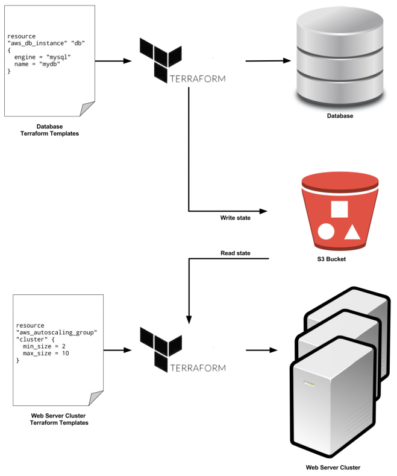

Terraform
Table of Contents
- 1. Configuration
- 2. AWS
- 3. State
- 4. Module
- 5. Command
- 6. Environment
- 7. Terragrunt
- 8. Link
1 Configuration
1.1 文件
Terraform 配置使用 HCL (HashiCorp Confguration Language) 声明式语言，脚本扩展名为 .tf 。
1.2 Interpolation
// 变量 "${var.<variable_name>}" // 资源属性 "${<resource_type>.<resource_name>.<attribute>}" // 只读数据 "${data.<data_type>.<data_name>.<attribute>}" // 模块输出 "${module.<module_name>.<output_name>}"
当一个资源引用了另一个资源的属性时，就产生了一个依赖关系，Terraform 会解读资源的依赖关系，以决定创建资源的顺序。
1.3 Interpolation 函数
file() |
读取文件，返回字符串 |
|---|---|
1.3.1 file()
"${file("<file_path>")}"
Terraform 将文件路径解读为当前目录的相对路径，在模块中使用 file() 时，需要使用 ${path.module} 表示模块目录的相对路径，而非引用位置的相对路径。
"${file("${path.module}/<file_path>")}"
1.4 元参数
多种资源使用的参数。
lifecycle |
定义资源的 lifecycle 行为 |
|---|---|
1.4.1 lifecycle
lifecycle { create_before_destroy = <bool> // True 表示在删除现有资源前，先增加替代资源 // 设置为 true 时，此资源依赖的所有资源也必须设置为 true prevent_destroy = <bool> // True 表示防止资源被删除，尝试删除时会报错 ignore_changes = ["<string>", ...] }
1.5 provider
provider "<name>" { # e.g. aws region = "<region>" # e.g. us-east-1 }
1.6 resource
resource "<provider_resource>" "<name>" { <config_name> = "<config_value>" }
1.7 variable
variable "<name>" { description = "<desc>" type = "<type>" // string, list, map // 如果未指定，则根据默认值猜测类型 // 如果没有默认值，则默认为 string default = "<value>" // 如果未通过命令选项或环境变量指定值，则使用默认值 // 如果没有默认值，则命令会提示输入值 }
"${var.<variable_name>}"
1.8 data
A data source represents a piece of read-only information that is fetched from the provider.
data "<type>" "<name>" { }
1.8.1 template_file
data "template_file" "<name>" { template = "${file("<file_path>")}" vars { <var_name> = "<var_value>" ... } } # 模板文件内引用变量（语法与 bash 脚本引用环境变量相同） ${<var_name>} # 引用模板文件的输出 user_data = "${data.template_file.<name>.rendered}"
1.8.2 terraform_remote_state
用于读取远程状态文件。
1.9 output
output "<name>" { value = "<value>" }
2 AWS
2.1 aws_autoscaling_group
2.1.1 资源
resource "aws_autoscaling_group" "<name>" { name = "<name>" # ASG references launch configuration launch_configuration = "<launch_configuration_id>" availability_zones = ["<zone>", ...] min_size = <int> max_size = <int> // 新实例启动时注册到 ELB load_balancers = ["<elb_name>", ...] // 健康检查方式 health_check_type = "<type>" // EC2 或 ELB }
2.2 aws_autoscaling_schedule
2.2.1 资源
resource "aws_autoscaling_schedule" "<name>" { autoscaling_group_name = "<asg_name>" scheduled_action_name = "<action_name>" start_time = "<time_string>" # yyyy-mm-ddThh:mm:ssZ end_time = "<time_string>" # yyyy-mm-ddThh:mm:ssZ recurrence = "<cron_string>" min_size = <int> max_size = <int> desired_capacity = <int> }
2.3 aws_db_instance
2.3.1 资源
resource "aws_db_instance" "<name>" { name = "<name>" instance_class = "<instance_class>" # e.g. db.t2.micro allocated_storage = <number> # Number of GB engine = "<engine>" # e.g. mysql username = "<username>" password = "<password>" }
2.3.2 属性
address |
|
|---|---|
port |
2.4 aws_elb
2.4.1 资源
resource "aws_elb" "<name>" { name = "<name>" availability_zones = ["<zone>", ...] security_groups = ["<security_group_id>", ...] listener { // 接收规则 lb_port = <port> lb_protocol = "<protocol>" // 路由规则 instance_port = <port> instance_protocol = "<protocol>" } // 静态实例列表 instances = ["<instance_id>", ...] // 健康检查（目标响应 200 时为健康） health_check { healthy_threshold = <int> unhealthy_threshold = <int> timeout = <seconds> interval = <seconds> target = "<protocol>:<port><path>" // protocol = HTTP, HTTPS, TCP, SSL } }
egress { from_port = 0 to_port = 0 protocol = "-1" cidr_blocks = ["0.0.0.0/0"] }
2.4.2 属性
dns_name |
DNS 名称 |
|---|---|
2.5 aws_instance
2.5.1 资源
resource "aws_instance" "<name>" { ami = "<ami_id>" // AMI ID instance_type = "<instance_type>" // 实例类型 vpc_security_group_ids = ["<security_group_id>", ...] // 实例启动时运行的脚本 user_data = <<-EOF <script> EOF tags { <tag_name> = "<tag_value>" } }
2.6 aws_launch_configuration
2.6.1 资源
resource "aws_launch_configuration" "<name>" { image_id = "<ami_id>" instance_type = "<instance_type>" security_groups = ["<security_group_id>", ...] // 实例启动时运行的脚本 user_data = <<-EOF <script> EOF }
2.7 aws_s3_bucket
2.7.1 资源
resource "aws_s3_bucket" "<name>" { bucket = "<bucket_name>" versioning { enabled = <bool> } }
2.7.2 属性
arn |
Amazon Resource Name |
|---|---|
2.8 aws_security_group
2.8.1 资源
resource "aws_security_group" "<name>" { name = "<name>" // 接收规则 ingress = { from_port = <port> to_port = <port> protocol = "<protocol>" cidr_blocks = ["<cidr_block>", ...] } // 发送规则 egress = { from_port = <port> to_port = <port> protocol = "<protocol>" cidr_blocks = ["<cidr_block>", ...] } }
resource "aws_security_group" "test" { name = "test" ingress = { from_port = 8080 to_port = 8080 protocol = "tcp" cidr_blocks = ["0.0.0.0/0"] } }
ingress 和 egress 为 inline 形式属性，建议使用资源 aws_security_group_rule 单独定义，以便于添加规则。
output "<output_name>" { value = "${aws_security_group.<name>.id}" } resource "aws_security_group_rule" "<name>" { security_group_id = "${module.<module_name>.<output_name>}" }
2.9 aws_security_group_rule
resource "aws_security_group_rule" "<name>" { security_group_id = "<group_id>" type = "<type>" # ingress, egress from_port = <port> to_port = <port> protocol = "<protocol>" cidr_blocks = ["<cidr_block>", ...] }
2.10 data
2.10.1 aws_availability_zones
availability_zones = "${data.aws_availability_zones.all.names}"
3 State
Terraform 运行后会在当前目录下生成 terraform.tfstate 状态文件，包含被创建的架构的信息，内容为明文 JSON，是从 Terraform 模板中的资源到真实资源（如 AWS 资源的 ID）的映射。再次运行时，Terraform 通过这些映射获取真实资源当前的状态，与模板资源进行对比，以决定需要进行的操作。
3.1 远程状态
Terraform 支持将状态文件加密存储到远程，每次运行时自动获取和保存状态文件。Terraform 支持 S3、Azure 和 HashiCorp 等存储服务。
远程状态存储可以解决共享和明文保存敏感数据的问题，但是不支持锁机制，无法避免竞态问题。
terraform { backend "s3" { bucket = "<bucket_name>" key = "<state_file_path>" region = "<region>" } } # 输出属性 output "<output_name>" { value = "<value>" }
使用数据源 terraform_remote_state 可以以只读方式获取其他 Terraform 模板的状态文件。
data "terraform_remote_state" "<data_name>" { backend = "s3" config { bucket = "<bucket_name>" key = "<state_file_path>" region = "<region>" } } # Interpolation "${data.terraform_remote_state.<data_name>.<output_name>}"

4 Module
任一目录下的一组 Terraform 模板都可以认为是一个模块（module），一个模块可以复用其他模块的代码。
module "<name>" { source = "<source>" # 相对路径，e.g. ../../modules/<service> # Git URL，e.g. git::git@github.com:foo/modules.git/service?ref=v0.0.1 # ref 可以指定 commit（sha1 hash）、分支名、标签名 }
# /modules/<service>/vars.tf # 声明变量 variable "<var_name>" {} # /modules/<service>/main.tf # 使用变量 "${var.<var_name>}" # /services/<service>/main.tf # 引用模块，变量赋值 module "<name>" { source = "../../modules/<service>" <var_name> = "<var_value>" }
5 Command
terraform <command> <options>
-var <name>="<value>" # 传入脚本变量
-var-file <path> # 通过文件传入脚本变量
Terraform 命令只应用于当前目录下的 .tf 文件。
| 流程 | init |
初始化 |
|---|---|---|
plan |
预览变化，语法检查 | |
apply |
执行变化 | |
destroy |
销毁所有资源 | |
| 输出 | output |
输出输出变量值 |
graph |
输出依赖关系图 | |
| 模块 | get |
下载、更新模块 |
5.1 graph
输出格式为图描述语言 DOT。
5.2 output
terrform output [<name>]
5.3 plan
+ |
增加 |
|---|---|
- |
删除 |
~ |
修改 |
-/+ |
替换 |
6 Environment
AWS_ACCESS_KEY_ID |
|
|---|---|
AWS_SECRET_ACCESS_KEY |
|
TF_VAR_<name> |
传入脚本变量 |
Terraform 支持 AWS CLI/SDK 的 auth 机制（ ~/.aws/credentials ）。
7 Terragrunt
A thin wrapper for Terraform that manages remote state automatically and provides locking by using Amazon DynamoDB. For any commands that could change the Terraform state (e.g. apply and destroy), Terragrunt will acquire and release a lock using DynamoDB.
7.1 配置
# /root/terraform.tfvars terragrunt = { remote_state { backend = "s3" config { bucket = "<bucket_name>" key = "${path_relative_to_include()}/terraform.tfstate" region = "<region>" encrypt = <bool> dynamodb_table = "<table_name>" } } } # /root/<path>/terrform.tfvars terragrunt = { include { path = "${find_in_parent_folders()}" } } # /root/<path>/main.tf terraform { backend "s3" {} }